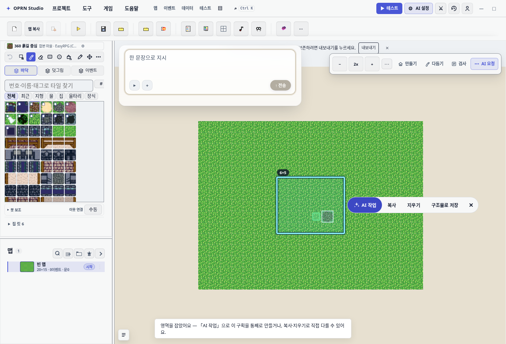
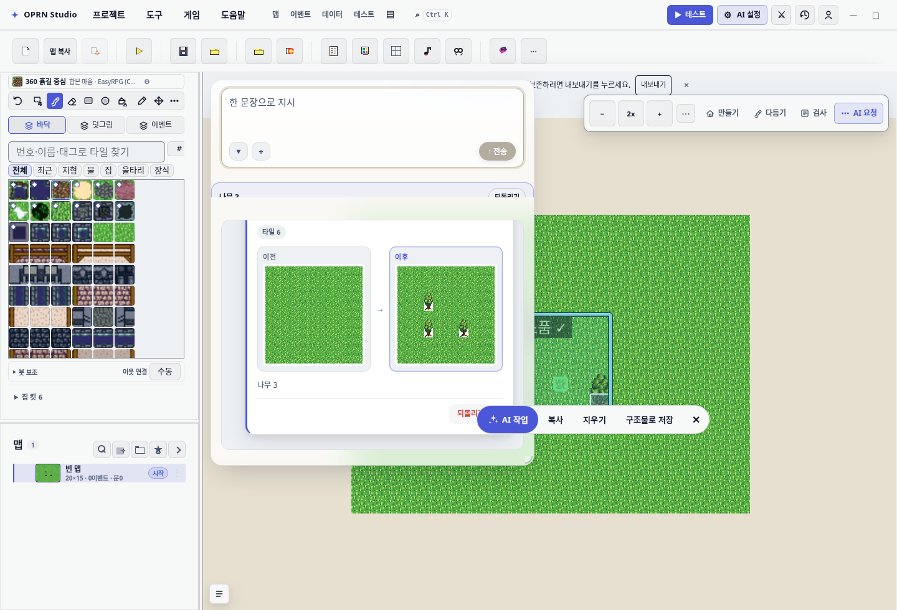
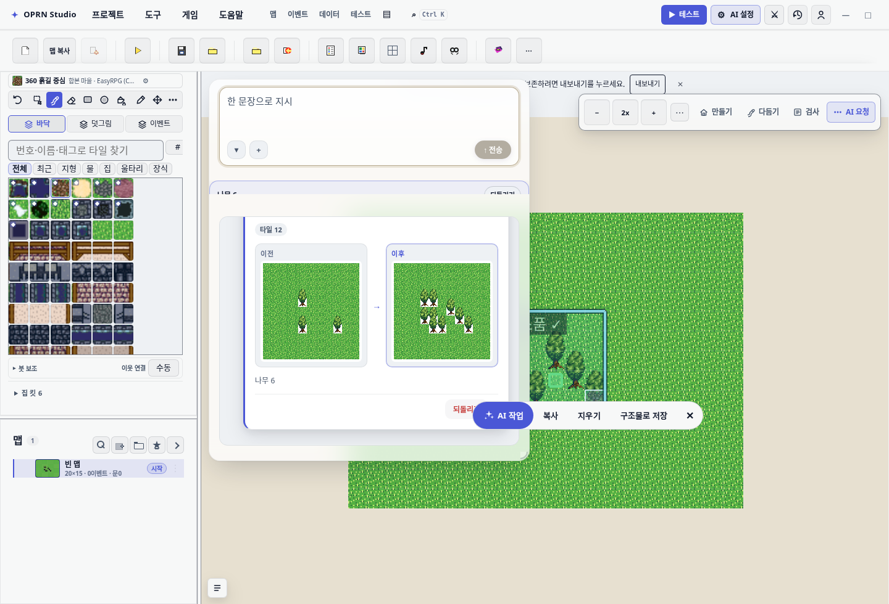

영역 작업 AI 를 조수 하나로 통합한다
1. 무엇이 문제였나
| 진입 | 실행체 | 모델 | 기억 | 승인 |
|---|---|---|---|---|
| 조수에 입력 | aiChatPanel.executeTurn | 감독+lite, 추론 on | 세션 지속 | 없음 |
| 선택 후 조수에 입력 | runRegionTask | lite 고정, 추론 off | 매번 새 세션 | 없음 |
| 영역 팝오버 | runRegionTask | lite 고정, 추론 off | 매번 새 세션 | pending + 검토 UI |
approvalPolicy.ts 는 이미 “승인 게이트 없음, 복구는 되돌리기”를 정책으로 박아 뒀고
9c6b37a5·f97a0824 두 커밋이 조수에서 승인 카드를 걷어냈다. 그런데 커밋 제목이
“조수 창에서 걷어낸다”였고, 영역 쪽 승인 게이트는 그대로 남았다. 통합 방향은 이미 정해져
있었고 영역만 따라오지 않은 상태였다.
양쪽에 갈라져 있던 자산
| 영역 경로에만 | 조수에만 |
|---|---|
재료·도구 규칙(가방 금지, 장식박스↔보물상자 구분, 물 위 소품 금지, shape=circle)하드 클립 clipMapCellsToRegion플레이 가능성 하네스 reviewRegionDraft
|
프로젝트 무결성 게이트 commitChangeset커밋 로그 · 세션 기억 비전(맵 스크린샷) · 자율 실행 |
2. 통합 후 구조
sendText(text)
├ turnScope = 선택이 있고 escaping intent 가 아니면 {mapId, region}, 아니면 null
├ dispatchRegionTaskStatus(running) ← 캔버스 배지 유지
├ session.sendUserMessage(
│ text + buildTurnGuide({instruction, tileset, scope}) + contextFooter(),
│ …, { autonomous, instruction: text } ← 되묻기 판정은 원문으로
│ )
└ applyProposal(calls, bubble, turnScope)
├ clipMapCellsToRegion(base, proposed, scope) ← 스코프 있을 때만
├ repairLayoutPlacement (기존)
├ layoutValidationBlocking → 차단 (기존)
├ reviewRegionDraft → ⚠ 로그 버블 (신규, 차단 안 함)
└ applyProposedProject → commitChangeset + 커밋로그
turnScope 는 턴 시작 시점에 고정한다 — 턴 도중 선택이 바뀌어도 모델이 들은 사각형과
클립하는 사각형이 어긋나면 안 된다. 클립은 배치 수리 앞에 둔다(클립으로 되돌린 칸을
배치 수리가 다시 건드리면 안 된다).
진입점 6개 → 이벤트 1개
oprn:ai-selection-context 의 detail 에 instruction·autoRun 을 더했다.
autoRun 은 instruction 이 있을 때만 유효하다.
| 파일 | 전 | 후 |
|---|---|---|
selectionActionChips | openRegionTaskModal + 컨텍스트 요청 | 이벤트 1건 (focus:true) |
mapSelectionContextMenu | openModal deps | 같음 |
buildPalette | openBuildPaletteAiFill/Construction | instruction+autoRun |
canvasInspectionPanel | openRegionTask deps | 같음 |
canvasAiWorkbench | openRegionTask deps | 선택 없으면 패널만 펼침 |
editorToolHook | openModal+runMock | 삭제(하네스 4종만 남김) |
3. 함께 고친 회귀 — 되묻기가 턴을 통째로 세우고 있었다
통합 직후 실측: “맵 전체를 풀로 덮어줘” → “집/건물을 어떻게 만들까요? 실내인가요 야외인가요?” 로 되물으며 LLM 라운드 0회, 툴 0건으로 종료.
원인은 통합이 만든 합성문이다. 패널은 이제 지시 + 도구 가이드 + 컨텍스트 footer 를
한 문자열로 보내는데, 가이드의 고정 문구에는 “실내/방 맵 요청에는 야외 시공 facade 금지”처럼
실내·야외 표지가 동시에 들어 있다. resolveIntentClarification 이 그 합성문을 보면
“경로를 확정할 수 없음”으로 판정한다.
고침: sendUserMessage(payload, …, { instruction }) 로 사용자 발화 원문을 함께 넘기고,
세션이 되묻기 판정만 그것으로 한다. 경로 확정 신호(isProtocolLocked)는 종전대로 합성문에서
본다 — 스코프 문구(“영역 작업 도구 규칙”)가 프로토콜 잠금이고, 스코프가 걸린 턴의 bare “집”은
가이드가 이미 야외 1채로 못박았으므로 되물으면 안 된다.
같은 원리가 도메인 노출에는 적용되지 않는다 — 가이드의 한국어 키워드가 일부러 도구 도메인을 연다. 도메인은 넓게 틀려도 도구가 몇 개 더 열릴 뿐이고, 되묻기는 턴을 세운다.
4. 삭제 목록
| 파일 | 줄 | 이유 |
|---|---|---|
panels/regionTaskModal.ts | 2,016 | 두 번째 엔드포인트 |
regionTask/runRegionTask.ts | 1,013 | 두 번째 엔진 (내용은 turnGuide+applyProposal 로 흡수) |
regionTask/runDirectRoomDraft.ts | 287 | 모달 전용 |
regionTask/pendingRegionApply.ts | 260 | 승인 게이트 — 정책상 없음 |
regionTask/regionChangeGroups.ts | 232 | 부분 적용 전용 |
regionTask/regionChangeSummary.ts | 202 | 검토 UI 전용 |
regionTask/regionContextSuggestions.ts | 169 | 모달 컴포저 전용 |
regionTask/partialApplyCompose.ts | 70 | 부분 적용 전용 |
regionTask/regionTileStats.ts | 64 | 검토 UI 전용 |
regionTask/recentInstructions.ts | 50 | 모달 컴포저 전용 |
editor/regionClientRect.ts | — | 팝오버 배치 전용 |
styles/editor/region-task.css | — | 모달 스타일 |
| vitest 19개 · e2e 5개 | — | 모듈과 함께 사망 |
남긴 것: clipToRegion(스코프 핵심) · regionIntentRouter(가이드 라우팅) ·
regionTaskStatus(캔버스 배지) · harnessReview(경고용) · suggestedCommands.
regionSnapshot.ts 는 삭제 계획이었지만 mapTileDraw·aiChangePreview
(조수 자신의 변경 미리보기)가 쓰고 있어 남겼다.
5. 실모델 실측 — 사람 손 순서 그대로
계획서의 마지막 검증 항목(“실제 앱에서 우클릭 드래그로 영역 잡고 조수에 «나무 좀 심어줘»”)을
손으로 하는 대신 프로브로 고정했다 — test/e2e/_scoped-turn-live-probe.spec.ts.
모델은 gemini-3.7-flash(Antigravity OAuth), 20×15 빈 맵, 우클릭 드래그로 잡은 사각형
(7,5) 6×5. 총 20.6분.
| 확인 | 방법 | 결과 |
|---|---|---|
| (a) 영역 안에만 깔리는가 | 맵 전체 lower/upper 스냅샷 차이를 좌표로 환산 | 턴1 6칸 · 턴2 12칸 — 영역 밖 0칸 |
| (b) 사각형 배지가 뜨는가 | REGION_TASK_STATUS_EVENT 를 부팅부터 수집 | on→off, 같은 runId:1, 사각형 일치 |
| (c) 후속 턴이 기억하는가 | 재무장 없이 “좀 더 많이” 전송 | 모델이 «나무 추가 심기»로 이어감 |
| (d) 되돌리기 한 번 | 도구막대 undo 1회 → 직전 스냅샷 대조 | 잔여 0칸 |
mentionedClip:false — 모델이 영역 밖을 칠하지 않아 클립이 발동할 일 자체가 없었다.
프롬프트 스코프만으로 지켜졌다는 뜻이고, 클립은 그 아래 안전망으로 남는다.



6. 게이트·테스트
| 검증 | 결과 | 비고 |
|---|---|---|
tsc -p tsconfig.app.json | 무결 | 워크트리는 npx tsc 가 TS 7 을 집으므로 메인 체크아웃 바이너리 사용 |
gates:css | 통과 | 모달 CSS 삭제로 .hidden 산출물 1종 감소 → 라이브 클래스 기준선만 갱신. 예산 래칫은 손대지 않음 |
gates:surface | 통과 | — |
| 핵심 vitest 10파일 | 65/65 | scopedAssistantTurn·turnGuide·regionTaskClip·재배선된 진입점 5종 |
| 영향 vitest 36파일 | 잔여 실패 있음 | 전부 베이스 커밋 워크트리에서 동일 재현(선재 실패 11건 + 부하 타임아웃) |
| 영역 e2e 3종 | 통과 | canvas-fill-selection-chips·right-drag-chips-anchored·canvas-ai-workbench |
테스트를 두 곳 고쳐야 했다
-
canvas-fill-selection-chips.spec.ts— 칩 바를 “캔버스 우하단 고정 FAB”로 단정하고 있었다. 우클릭 제스처가 영역을 잡는 동작으로 되돌아온181c2570이후 실제 동작과 어긋난 채 남아 베이스에서도 실패했고,right-drag-chips-anchored와 정면으로 모순됐다. 놓은 자리 기준으로 고쳤다. -
right-drag-chips-anchored.spec.ts— 단발boundingBox()가 오버레이 재생성 (popupKey변경 시 노드 교체)과 경합해 3회 중 1회null. 폴링으로 바꿨다. 이 스펙은 이 브랜치가 진단(_접두어)에서 정식 스위트로 올린 것이라 경합을 남길 수 없었다.
7. 알아 둘 변화 — 승인된 삭제의 결과
| 변화 | 결과 |
|---|---|
| 비용 | lite 고정이 풀려 영역 작업도 감독 모델 계획 단계를 탄다. 의도된 것이지만 체감 비용이 오른다. |
runDirectInteriorRoomDraft 삭제 |
결정론적 양방향 실내 신축(밖의 문 + 실내 맵 + 복귀 이동, 영역 클립, 되돌리기 1회)이 없어졌다.
이제 AI 가 run_interior_room_pipeline + 문 이벤트로 조립한다. |
| NPC 시간표 결정 게이트 삭제 | keep-fixed/enable-time 선택지가 없다. 시간 시스템이 꺼진 채 스케줄 NPC 를
넣으면 ⚠ 만 남고 적용된다. 자동 수리는 하지 않았다 — 그건 정책을 새로 만드는 일이다. |
| 적용 중 스토어 구독자 예외 | 재시도 가능한 pending 대신 턴 오류로 뜬다(옛 롤백이 삭제된 applyRegionProjectWithHistory 에
있었고 store.replace 에는 롤백이 없다). |
regionIntentRouter 과활성 |
substring 매칭(주인 ⊂ 주인공, bare 전투/세이브/저장,
아무 바꿔/고쳐)이 라우터가 매 턴 도는 지금 비공간 채팅 턴에도 1.3~1.5KB 를 붙인다.
라우터는 이 작업 범위 밖이라 별건으로 남긴다. |
8. 사고 하나 — 공유 node_modules 를 잠시 깼다
베이스 대조용 워크트리 /tmp/rpg-baseline 의 node_modules 가
메인 체크아웃을 가리키는 심링크 하나였는데, 그 안에서 개별 패키지 심링크를 걸었다.
경로가 메인으로 풀려 vite·rollup·typescript·playwright 등
7개 패키지와 .bin 4개가 자기 자신을 가리키는 링크가 되었다
(Too many levels of symbolic links). 워크트리 30개가 같이 쓰는 트리다.
즉시 원래 상대 타깃으로 복구했다 — .bin/vite→../vite/bin/vite.js,
.bin/playwright→../playwright/cli.js, .bin/tsc→../typescript/bin/tsc,
.bin/vitest→../vitest/vitest.mjs (각 package.json 의 bin 필드가 정답).
복구 후 vite 6.4.3 · tsc 5.9.3 · vitest 3.2.4 · playwright 1.61.0 모두 정상 동작 확인.
링크를 걸기 전에 ls -ld node_modules 로 디렉터리인지 확인해야 한다.
생성 2026-08-31 · 작성 Claude Opus 5 (Claude Code) · 커밋 9e779c14 ·
증거 원본 .omo/evidence/scoped-turn-live/run4/ ·
프로브 test/e2e/_scoped-turn-live-probe.spec.ts